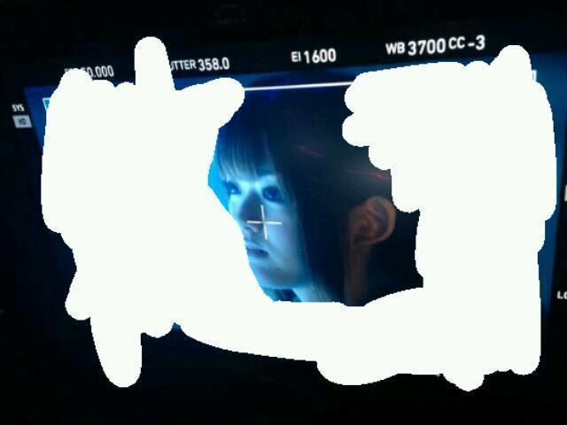

2013/0529Wed麦茶を欲すっ(o・・o)
おつかれさんまっ(o・・o)
さゆりんごっっ(o・・o)
生のアイドルが好き
第二回放送がありました！
ゲストは松下唯さんと
ウェザーガールズさんでした！
沢山のコメントもありがとうございました＼(^^)／
ニコ生って
ダイレクトやから楽しいねっ(*^^*)
今回もスタッフさんが
楽しい企画を沢山考えてくださったので
すごく盛り上がりました！！！
たのしかった♪
ゆいみんさんは
ぼのぼのの物真似までしてくださって
声も台詞も本当に可愛かったです!!
ウェザーガールズさんは
すごく元気で各々に個性があって
スタイルもよくて
日本語の勉強だけでも大変やのに
気象予報士の勉強もされてて
本当にすごいなと思いました！
松村はもう２組とも大ファンです！
残念ながら
見逃してしまったかたも
スカパーで再放送が
あとナタリーさんにもレポが載っているので
ぜひみてください♪
↓こちらです♪
次回はどなたがきてくださるのかな〜＼(^^)／
次回もよろしくお願いしますm(__)m
そして表題曲のレコーディングをしてきました！
大阪公演で発表されることが
決まった新曲ですが
ＭＶもいい感じですよ〜＼(^^)／
気になっちゃいますかー(*^^*)？
松村自身も出来上がりが気になります！笑
ＭＶの一部をちょっと公開！

こんな感じです(*^^*)
全くわからないと思いますが...
きゃーきになるぅぅぅ(//∇//)
それではまたね！
さゆりんでしたっっ(o・・o)/~
2013/05/29 12:48
コメント(309)
新曲めっちゃ気になるよ～(*^^*)
早く聞きたい♪
早く聞きたい♪
気になる
気になる
気になるよー
bay
気になる
気になるよー
bay
楽しみ〜
まっちゅん大好き。
まっちゅん大好き。
さゆりーん!
レコーディングお疲れ様(*´∇｀*)
楽しみにしてるよッ
生のアイドルが好き見たよヾ(´∀｀○)ノ
お疲れ様でした! よかったよ!!
レコーディングお疲れ様(*´∇｀*)
楽しみにしてるよッ
生のアイドルが好き見たよヾ(´∀｀○)ノ
お疲れ様でした! よかったよ!!
全然分からないよ(^^)
ＭＶめっちゃ気になる！
きゃー気になるぅ～
大阪公演が楽しみや(*^^*)
大阪公演が楽しみや(*^^*)
めっちゃ気になる
はやくみたいよぉ〜
はやくみたいよぉ〜
俺高校1年だけど
ぼのぼの知ってるよー
では明日も頑張ってねー
ぼのぼの知ってるよー
では明日も頑張ってねー
さゆりんっ^_^
さゆりんごぱーんちっ‼
さゆりんごぱーんちっ‼
こんばんごっっ(o・・o)
さあやんごっっ(o・・o)←
さゆりん今日もお疲れさま♪
MVのさゆりんきゃわいいいいry
なんか大人っぽい…かな？ww
とにかくはやく見たいよ〜♡♡
もう梅雨だからじめじめするね！
でもご飯たくさん食べて、
元気に過ごそうねヽ(*`・o・´*)ﾉ
さゆりん、お疲れさまー！
MV画像のさゆりん大人（*＾3＾）/～☆
雰囲気変わるね～(^^)
梅雨入りしたから体に気をつけてお仕事頑張ってね!!
見たかった( ┰_┰)
それにつきるの:（
さゆりん、こんばんりんご

 「生のアイドルが好き」２回目お疲れ様でした。２回目は仕事もあって見られませんでしたので、スカパーとかナタリーさんでチェックしようと思います。６ｔｈシングル、大阪プリンシパルで初お披露目ですね。楽しみにしてますよ。ＭＶの一部をちょっとって・・・さゆりんの顔しか映ってへんし・・・確かにめっちゃ気になってます。大阪プリンシパル行きまっせー。
「生のアイドルが好き」２回目お疲れ様でした。２回目は仕事もあって見られませんでしたので、スカパーとかナタリーさんでチェックしようと思います。６ｔｈシングル、大阪プリンシパルで初お披露目ですね。楽しみにしてますよ。ＭＶの一部をちょっとって・・・さゆりんの顔しか映ってへんし・・・確かにめっちゃ気になってます。大阪プリンシパル行きまっせー。


さゆりん親衛隊隊長のあっき～です(^_^)ゞ
元気りんご さゆりんご
今度の新曲 も楽しみやで
も楽しみやで
握手会も7月と8月の横浜の個握は１部～５部まで、全部さゆりん入ってます
さゆりんごと過ごせるのが癒やしやなぁ
ほなまた
元気りんご
今度の新曲
握手会も7月と8月の横浜の個握は１部～５部まで、全部さゆりん入ってます
さゆりんご
ほなまた
新曲楽しみー!!
待ちきれねーーー
絶対買うね、今から宣言する
待ちきれねーーー
絶対買うね、今から宣言する
生のアイドルが好きよかったよー♪
さゆりんの進行ぶりもいい感じになってきてる。
もっとたくさんやってほしい。
次回もたのしみー！
6thめちゃ気になるわぁ。
あ、5/31のプリンシパル行ける。
ひーくん見つけてね(笑)
ではでは。
さゆりんの進行ぶりもいい感じになってきてる。
もっとたくさんやってほしい。
次回もたのしみー！
6thめちゃ気になるわぁ。
あ、5/31のプリンシパル行ける。
ひーくん見つけてね(笑)
ではでは。
さゆりんこんばんは～
乃木どこ？観たよ～
言われてみれば同じような写真やったかな～って思ったけど気付かんかったわ、でもさゆりんのブログは楽しみにしてるよ(^o^)
あとそのMVの写真ぜんぜん分からんわ～すごい気になるけどまだ1ヶ月ある…
それじゃあ、これからも頑張ってね!(^^)!応援してるよ～
バイバーイ
乃木どこ？観たよ～
言われてみれば同じような写真やったかな～って思ったけど気付かんかったわ、でもさゆりんのブログは楽しみにしてるよ(^o^)
あとそのMVの写真ぜんぜん分からんわ～すごい気になるけどまだ1ヶ月ある…
それじゃあ、これからも頑張ってね!(^^)!応援してるよ～
バイバーイ
さゆりんごっっ(o・・o)
まだ生のアイドルがすきみれてないよー
次の表題曲 きゃーきになるぅぅぅ(//∇//)
ほんと楽しみにしてます
明日は高校生活最後の体育祭です
楽しんできます 暇だったらいい結果を祈ってね笑
それでは
まだ生のアイドルがすきみれてないよー
次の表題曲 きゃーきになるぅぅぅ(//∇//)
ほんと楽しみにしてます
明日は高校生活最後の体育祭です
楽しんできます 暇だったらいい結果を祈ってね笑
それでは
楽しみにしてます！
BLOG更新ありがとう(^O^)
気になる～♪早くみたいー！
さゆりんかわいいーﾖｰﾖｰ!!!
さゆりんかわいいーﾖｰﾖｰ!!!
◇◆◇◆◇◆◇◆◇◆◇◆◇◆◇◆◇◆◇
さゆりーーん!!
ニコ生、２回目の放送めっちゃ楽しみにしてて、仕事頑張って早く終わらせて真っ直ぐ家に帰って番組のコメントに参加しようと準備満タンだったのに、アクセス集中で結局最後まで視聴できなかったよ(ノД`)
１回目の放送がすごく楽しくてさゆりんが可愛くて癒されたから楽しみにしてたのにーでも、タイムシフト録画したから休みの日に観るね☆
ナタリーさんのレポートなどなど情報もありがとう!!早速見たよ☆
新曲楽しみだよー(*^▽^)/★*☆♪
Tomoya.ともやっぴ@やーさん
◇◆◇◆◇◆◇◆◇◆◇◆◇◆◇◆◇◆◇
さゆりーーん!!
ニコ生、２回目の放送めっちゃ楽しみにしてて、仕事頑張って早く終わらせて真っ直ぐ家に帰って番組のコメントに参加しようと準備満タンだったのに、アクセス集中で結局最後まで視聴できなかったよ(ノД`)
１回目の放送がすごく楽しくてさゆりんが可愛くて癒されたから楽しみにしてたのにーでも、タイムシフト録画したから休みの日に観るね☆
ナタリーさんのレポートなどなど情報もありがとう!!早速見たよ☆
新曲楽しみだよー(*^▽^)/★*☆♪
Tomoya.ともやっぴ@やーさん
◇◆◇◆◇◆◇◆◇◆◇◆◇◆◇◆◇◆◇
さゆりん、おつかれさま(o^^o)
ニコ生すごく楽しませてもらったよ^ ^
毎回いろいろなアイドルたちと出会うことで
より一層魅力を上げてくださゆにゃん(*^_^*)
ニコ生すごく楽しませてもらったよ^ ^
毎回いろいろなアイドルたちと出会うことで
より一層魅力を上げてくださゆにゃん(*^_^*)
さーたんきゃわたんすね（*≧w≦*）
おつかれさんまっ！！
ニコ生観ましたっ！！
オープニングでお好み焼き拾ってくれてありがとうo(^-^)o
まぁ、ぼくのコメしたお好み焼きかは分からないけど、でも、ありがとう＼(^O^)／
色々とかわいかったですよ(≧▼≦)！！
ぼのぼのは僕も大好きで、特に洞窟でしまっちゃうおじさんがたくさん出てくる回が好きです(。・ω・。)！！
たぶん、クレしん好きな人は大概ぼのぼのも好きですよ！！
あと、いがらしみきお先生の漫画は忍ペンまん丸も好きですね(●´∀｀●)/
また次回の放送も楽しみにしてます！！
ニコ生観ましたっ！！
オープニングでお好み焼き拾ってくれてありがとうo(^-^)o
まぁ、ぼくのコメしたお好み焼きかは分からないけど、でも、ありがとう＼(^O^)／
色々とかわいかったですよ(≧▼≦)！！
ぼのぼのは僕も大好きで、特に洞窟でしまっちゃうおじさんがたくさん出てくる回が好きです(。・ω・。)！！
たぶん、クレしん好きな人は大概ぼのぼのも好きですよ！！
あと、いがらしみきお先生の漫画は忍ペンまん丸も好きですね(●´∀｀●)/
また次回の放送も楽しみにしてます！！
うわぁ～♡
新しいMV、めっちゃ楽しみです(o^^o)
さゆりんかわいいだろうな♡ドキドキ
新しいMV、めっちゃ楽しみです(o^^o)
さゆりんかわいいだろうな♡ドキドキ
見れなかったー(>_<)
次回は絶対みたいな～！
MVさゆりんかっけー★
次回は絶対みたいな～！
MVさゆりんかっけー★
毎日お疲れ様です(￣^￣)ゞ
めっちゃ気になる笑(o^^o)
めっちゃ気になる笑(o^^o)
お疲れまっちゅん(o・・o)
写真の感じが違うのは有野氏のアドバイスを取り入れたのかな(^_^)
お約束の左手ピースも可愛いから載せてね(^_^)v
6thはMVもﾌｫｰﾒｰｼｮﾝも楽しみですな
MV
写真の感じが違うのは有野氏のアドバイスを取り入れたのかな(^_^)
お約束の左手ピースも可愛いから載せてね(^_^)v
6thはMVもﾌｫｰﾒｰｼｮﾝも楽しみですな
MV
生のアイドルが好き
お疲れ様(^-^)/
大阪公演行って一足先に
新曲発表見たかったー(TT)
MV全くわからんけど、
気になりすぎるぅ(>_<)
ますます楽しみなってきた(￣▽￣)
おやすみなさい。
自分も冷たい麦茶なうです
暑いもんね～
MVりんご可愛い(//∀//)♪
暑いもんね～
MVりんご可愛い(//∀//)♪
おつかれりんごっっ(o・・o)
さゆりんごっっ(o・・o)
新曲楽しみや～＼(^o^)／
今度握手会行くんやけど、久しぶりにでこぴんしてもらっていい？
さゆりんのでこぴん味わってみたいわ( ^ω^ )
シングルも握手会も楽しみや、\(//∇//)\
(=ﾟωﾟ)ﾉ
さゆりんごっっ(o・・o)
新曲楽しみや～＼(^o^)／
今度握手会行くんやけど、久しぶりにでこぴんしてもらっていい？
さゆりんのでこぴん味わってみたいわ( ^ω^ )
シングルも握手会も楽しみや、\(//∇//)\
(=ﾟωﾟ)ﾉ
こんばんご～＼(^-^)／
かなりんごぱんちがあったのに
さゆりんごぱんちがなかったあああああ
次はかましちゃってね!!
かなりんごぱんちがあったのに
さゆりんごぱんちがなかったあああああ
次はかましちゃってね!!
ニコ生放送
ゲスト多めで賑やかだね～
次回のゲストは誰かな？
ゲスト多めで賑やかだね～
次回のゲストは誰かな？
かわいいね♪
生のアイドルが好き見たかった(*´・ω・)
来月は見逃さないぞ～
来月は見逃さないぞ～
おつかりんごです(^-^)/
新曲MVかっこいいね！
もっと見たいなあ
生のアイドルが好き、は
やっぱりすぐ反応返せるのが面白いね☆
新曲MVかっこいいね！
もっと見たいなあ
生のアイドルが好き、は
やっぱりすぐ反応返せるのが面白いね☆
こんばんは！さゆりん
GETのJOKERです( ~っ~)/
おつかれさんま！！ＷＷ
表題曲どんな曲なのか早く聞きたいよー(>_<)
楽しみすぎる(≧∇≦)
MVの様子、全く分からない(汗)
さゆりーん！
楽しみにしてますよん(*^o^*)
応援してるから！！
※じょーかー
今日Mr.ChildrenのREMの配信日ですよ
いい歌\(//∇//)\
6thもいい曲の予感\(//∇//)\
みんな楽しそうにレコーディングとかPV撮影とかやってますね\(//∇//)\
楽しみや\(//∇//)\
じゃあね（≧∇≦）
りんご姫っっ(o・・o)
いい歌\(//∇//)\
6thもいい曲の予感\(//∇//)\
みんな楽しそうにレコーディングとかPV撮影とかやってますね\(//∇//)\
楽しみや\(//∇//)\
じゃあね（≧∇≦）
りんご姫っっ(o・・o)
個別で話したいことあんねん
その時はよろしく(^з^)-☆
その時はよろしく(^з^)-☆
ＭＶ気になる--w
それに6枚目はやく出ないかなー!!
楽しみやぁぁ
それに6枚目はやく出ないかなー!!
楽しみやぁぁ
ニコ生おつかれさまでした(￣∇￣*)ゞ
さゆりん今回も可愛い＆楽しかった♪
投票ってなんかおもしろいねｗ
さゆりん今回も可愛い＆楽しかった♪
投票ってなんかおもしろいねｗ
こんにちは、松村さん。番組追って拝見できれば。ゆいみんさんお久し振り！ウェザーガールズさんのように、松村さんだったら何を学んでみたいですか？それでは、新曲楽しみにしてます。
更新んんん、ありがとうございます。
ＭＶ、いい感じですね…って
隠れすぎてなんだかわかんねー！
番組楽しそうですねぇ…
残念ながら見逃してしまいましたし、
スカパーにも入っておりませぬ。
ナタリーがん見して我慢します。
プリンシパル大阪公演行くので
新曲楽しみぃぃぃぃぃぃぃぃぃ！
ＭＶ、いい感じですね…って
隠れすぎてなんだかわかんねー！
番組楽しそうですねぇ…
残念ながら見逃してしまいましたし、
スカパーにも入っておりませぬ。
ナタリーがん見して我慢します。
プリンシパル大阪公演行くので
新曲楽しみぃぃぃぃぃぃぃぃぃ！
生のアイドルが好き見たかった(T□T)
レポありがと～
レポありがと～
どうもっ（・－・）/
シゲマコです。
お疲れ様です。
今日は１日中蒸し暑かったです。
雨も降りそうで降らない・・・・。
少し動くだけで汗が出る・・・。
なんともまぁナイーブな一日でした(￣▽￣)
今日は雨が降りそうだったんで
バス移動だったんですが
周りがほとんど女性でした・・・。
嬉しいようで嬉しくない（笑）
まず目のやり場に困りました。
だから音楽を聴きながら窓から
反対車線の車の運転手が男か？女か？
という動体視力を確かめる遊びをしていましたo(；△；)o
この話を学校の友達に言ったら
意外にも結構共感してくれました！！！！
では、遠くからですが応援しています。
お体に気をつけて頑張って下さい。
レコーディングおつかれちゃーん(*^o^*)
今回の曲も楽しみだねー
さゆりんフロントだし、PVもはやく見たい！！
今回の曲も楽しみだねー
さゆりんフロントだし、PVもはやく見たい！！
こんばんは！さゆりん
めっちゃ6thシングル楽しみーー‼
大阪公演行けないのが悲しい！泣
がんばってね！
あと、なんかブログの更新が少し早くなったね！
乃木どこの影響かな？笑
めっちゃ6thシングル楽しみーー‼
大阪公演行けないのが悲しい！泣
がんばってね！
あと、なんかブログの更新が少し早くなったね！
乃木どこの影響かな？笑


面白かったよ( ´ ▽ ` )ﾉ
ナタリーの写メも可愛かった！
来月も楽しみにしてるね＼(^o^)／